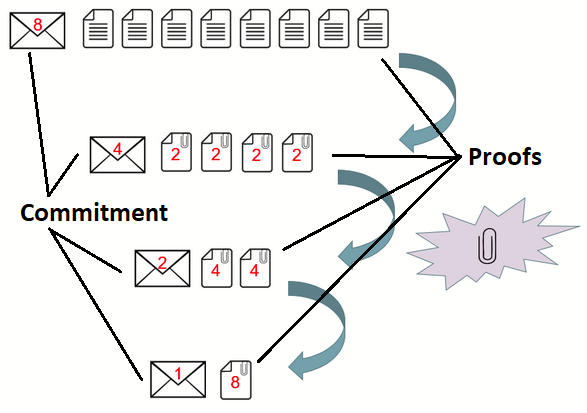
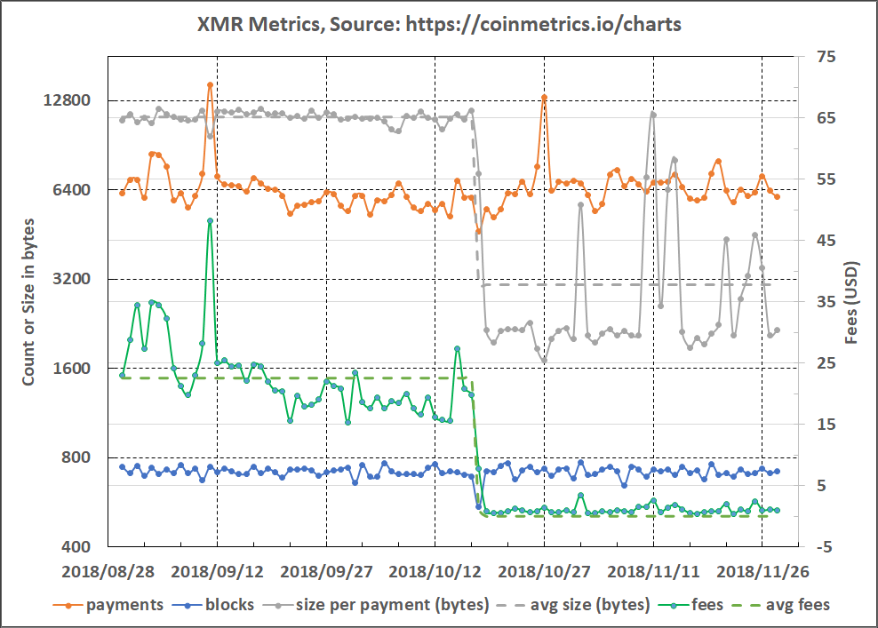
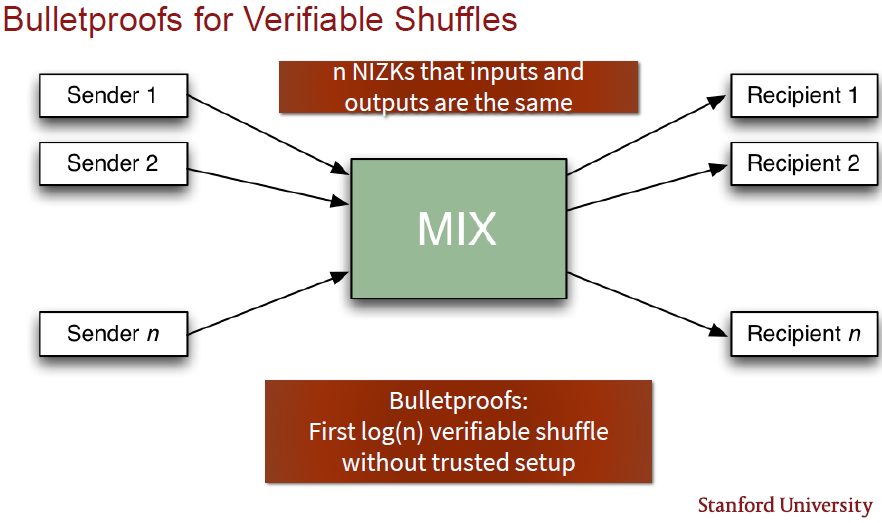

Bulletproofs and Mimblewimble
- Introduction
- How do Bulletproofs Work?
- Applications for Bulletproofs
- Comparison to other Zero-knowledge Proof Systems
- Interesting Bulletproofs Implementation Snippets
- Conclusions, Observations and Recommendations
- References
- Appendices
- Contributors
Introduction
Bulletproofs
Bulletproofs form part of the family of distinct Zero-knowledge Proofdef systems, such as Zero-Knowledge Succinct Non-Interactive ARguments of Knowledge (zk-SNARK); Succinct Transparent ARgument of Knowledge (STARK); and Zero Knowledge Prover and Verifier for Boolean Circuits (ZKBoo). Zero-knowledge proofs are designed so that a prover is able to indirectly verify that a statement is true without having to provide any information beyond the verification of the statement, e.g. to prove that a number is found that solves a cryptographic puzzle and fits the hash value without having to reveal the Noncedef ([2], [4]).
The Bulletproofs technology is a Non-interactive Zero-knowledge (NIZK) proof protocol for general Arithmetic Circuitsdef with very short proofs (Arguments of Knowledge Systemsdef) and without requiring a trusted setup. They rely on the Discrete Logarithmdef (DL) assumption and are made non-interactive using the Fiat-Shamir Heuristicdef. The name "Bulletproof" originated from a non-technical summary from one of the original authors of the scheme's properties: "Short like a bullet with bulletproof security assumptions" ([1], [29]).
Bulletproofs also implement a Multi-party Computation (MPC) protocol, whereby distributed proofs of multiple provers with secret committed values are aggregated into a single proof before the Fiat-Shamir challenge is calculated and sent to the verifier, thereby minimizing rounds of communication. Secret committed values will stay secret ([1], [6]).
The essence of Bulletproofs is its inner-product algorithm originally presented by Groth [13] and then further refined by Bootle et al. [12]. The latter development provided a proof (argument of knowledge) for two independent (not related) bindingdef vector Pedersen Commitmentsdef that satisfied the given inner-product relation. Bulletproofs build on these techniques, which yield communication-efficient, zero-knowledge proofs, but offer a further replacement for the inner product argument that reduces overall communication by a factor of three ([1], [29]).
Mimblewimble
Mimblewimble is a blockchain protocol designed for confidential transactions. The essence is that a Pedersen Commitment to $ 0 $ can be viewed as an Elliptic Curve Digital Signature Algorithm (ECDSA) public key, and that for a valid confidential transaction, the difference between outputs, inputs and transaction fees must be $ 0 $. A prover constructing a confidential transaction can therefore sign the transaction with the difference of the outputs and inputs as the public key. This enables a greatly simplified blockchain in which all spent transactions can be pruned, and new nodes can efficiently validate the entire blockchain without downloading any old and spent transactions. The blockchain consists only of block-headers, remaining Unspent Transaction Outputs (UTXO) with their range proofs and an unprunable transaction kernel per transaction. Mimblewimble also allows transactions to be aggregated before being committed to the blockchain ([1], [20]).
How do Bulletproofs Work?
The basis of confidential transactions is to replace the input and output amounts with Pedersen Commitmentsdef. It is then publicly verifiable that the transactions balance (the sum of the committed inputs is greater than the sum of the committed outputs, and all outputs are positive), while keeping the specific committed amounts hidden. This makes it a zero-knowledge transaction. The transaction amounts must be encoded as $ integers \mod q $, which can overflow, but are prevented from doing so by making use of range proofs. This is where Bulletproofs come in. The essence of Bulletproofs is its ability to calculate proofs, including range proofs, from inner-products.
The prover must convince the verifier that commitment $ C(x,r) = xH + rG $ contains a number such that $ x \in [0,2^n - 1] $. If $ \mathbf {a} = (a_1 \mspace{3mu} , \mspace{3mu} ... \mspace{3mu} , \mspace{3mu} a_n) \in {0,1}^n $ is the vector containing the bits of $ x $, the basic idea is to hide all the bits of the amount in a single vector Pedersen Commitment. It must then be proven that each bit satisfies $ \omega(\omega-1) = 0 $, i.e. each $ \omega $ is either $ 0 $ or $ 1 $, and that they sum to $ x $. As part of the ensuing protocol, the verifier sends random linear combinations of constraints and challenges $ \in \mathbb{Z_p} $ to the prover. The prover is then able to construct a vectorized inner product relation containing the elements of $ \mathbf {a} $, the constraints and challenges $ \in \mathbb{Z_p} $, and appropriate blinding vectors $ \in \mathbb Z_p^n $.
These inner product vectors have size $ n $ that would require many expensive exponentiations. The Pedersen Commitment scheme, shown in Figure 1, allows for a vector to be cut in half, and for the two halves to be compressed together, each time calculating a new set of Pedersen Commitment generators. Applying the same trick repeatedly, $ \log _2 n $ times, produces a single value. This is applied to the inner product vectors; they are reduced interactively with a logarithmic number of rounds by the prover and verifier into a single multi-exponentiation of size $ 2n + 2 \log_2(n) + 1 $. This single multi-exponentiation can then be calculated much faster than $ n $ separate ones. All of this is made non-interactive using the Fiat-Shamir Heuristicdef.

Figure 1: Vector Pedersen Commitment Cut and Half ([12], [63])
Bulletproofs only rely on the discrete logarithm assumption. In practice, this means that Bulletproofs are compatible with any secure elliptic curve, making them extremely versatile. The proof sizes are short; only $ [2 \log_2(n) + 9] $ elements are required for the range proofs and $ [\log_2(n) + 13] $ elements for arithmetic circuit proofs, with $ n $ denoting the multiplicative complexity. Additionally, the logarithmic proof size enables the prover to aggregate multiple range proofs into a single short proof, as well as to aggregate multiple range proofs from different parties into one proof (refer to Figure 2) ([1], [3], [5]).

Figure 2: Logarithmic Aggregate Bulletproofs Proof Sizes [3]
If all Bitcoin transactions were confidential, approximately 50 million UTXOs from approximately 22 million transactions would result in roughly 160GB range proof data, when using current/linear proof systems and assuming use of 52 bits to represent any value from 1 satoshi up to 21 million bitcoins. Aggregated Bulletproofs would reduce the data storage requirement to less than 17GB [[1]].In Mimblewimble, the blockchain grows with the size of the UTXO set. Using Bulletproofs as a drop-in replacement for range proofs in confidential transactions, the size of the blockchain would only grow with the number of transactions that have unspent outputs. This is much smaller than the size of the UTXO set [1].
The recent implementation of Bulletproofs in Monero on 18 October 2018 saw the average data size on the blockchain per payment reduce by ~73% and the average USD-based fees reduce by ~94.5% for the period 30 August 2018 to 28 November 2018 (refer to Figure 3).

Figure 3: Monero Payment, Block and Data Size Statistics
Applications for Bulletproofs
Bulletproofs were designed for range proofs. However, they also generalize to arbitrary arithmetic circuits. In practice, this means that Bulletproofs have wide application and can be efficiently used for many types of proofs. Use cases of Bulletproofs are listed in this section, but this list may not be exhaustive, as use cases for Bulletproofs continue to evolve ([1], [2], [3], [5], [6], [59]).
-
Range proofs
Range proofs are proofs that a secret value, which has been encrypted or committed to, lies in a certain interval. It prevents any numbers coming near the magnitude of a large prime, say $ 2^{256} $, that can cause wraparound when adding a small number, e.g. proof that $ x \in [0,2^{52} - 1] $.
-
Merkle proofs
Hash preimages in a Merkle tree [7] can be leveraged to create zero-knowledge Merkle proofs using Bulletproofs, to create efficient proofs of inclusion in massive data sets.
-
Proof of solvency
Proofs of solvency are a specialized application of Merkle proofs; coins can be added into a giant Merkle tree. It can then be proven that some outputs are in the Merkle tree and that those outputs add up to some amount that the cryptocurrency exchange claims they have control over without revealing any private information. A Bitcoin exchange with 2 million customers needs approximately 18GB to prove solvency in a confidential manner using the Provisions protocol [58]. Using Bulletproofs and its variant protocols proposed in [1], this size could be reduced to approximately 62MB.
-
Multi-signatures with deterministic nonces
With Bulletproofs, every signatory can prove that their nonce was generated deterministically. A SHA256 arithmetic circuit could be used in a deterministic way to show that the de-randomized nonces were generated deterministically. This would still work if one signatory were to leave the conversation and rejoin later, with no memory of interacting with the other parties they were previously interacting with.
-
Scriptless scripts
Scriptless scripts is a way to do smart contracts exploiting the linear property of Schnorr signatures, using an older form of zero-knowledge proofs called a Sigma protocol. This can all be done with Bulletproofs, which could be extended to allow assets that are functions of other assets, i.e. crypto derivatives.
-
Smart contracts and crypto derivatives
Traditionally, a new trusted setup is needed for each smart contract when verifying privacy-preserving smart contracts, but with Bulletproofs, no trusted setup is needed. Verification time, however, is linear, and it might be too complex to prove every step in a smart contract. The Refereed Delegation Model [33] has been proposed as an efficient protocol to verify smart contracts with public verifiability in the off-line stage, by making use of a specific verification circuit linked to a smart contract.
A challenger will input the proof to the verification circuit and get a binary response as to the validity of the proof. The challenger can then complain to the smart contract, claim the proof is invalid and send the proof, together with the output from a chosen gate in the verification circuit, to the smart contract. Interactive binary searches are then used to identify the gate where the proof turns invalid. Hence the smart contract must only check a single gate in the verification procedure to decide whether the challenger or prover was correct. The cost is logarithmic in the number of rounds and amount of communications, with the smart contract only doing one computation. A Bulletproof can be calculated as a short proof for the arbitrary computation in the smart contract, thereby creating privacy-preserving smart contracts (refer to Figure 4).

-
Verifiable shuffles
Alice has some computation and wants to prove to Bob that she has done it correctly and has some secret inputs to this computation. It is possible to create a complex function that either evaluates to 1 if all secret inputs are correct and to 0 otherwise. Such a function can be encoded in an arithmetic circuit and can be implemented with Bulletproofs to prove that the transaction is valid.
When a proof is needed that one list of values $[x_1, ... , x_n]$ is a permutation of a second list of values $[y_1, ... , y_n]$, it is called a verifiable shuffle. It has many applications, e.g. voting, blind signatures for untraceable payments and solvency proofs. Currently, the most efficient shuffle has size $O \sqrt{n}$. Bulletproofs can be used very efficiently to prove verifiable shuffles of size $O \log(n)$, as shown in Figure 5.
Another potential use case is to verify that two nodes executed the same list of independent instructions $ [x1,x4,x3,x2] $ and $ [x1,x2,x3,x4] $, which may be in different order, to arrive at the same next state $ N $. The nodes do not need to share the actual instructions with a verifier, but the verifier can show that they executed the same set without having knowledge of the instructions.

-
Batch verifications
Batch verifications can be done using one of the Bulletproofs derivative protocols. This has application where the verifier needs to verify multiple (separate) range proofs at once, e.g. a blockchain full node receiving a block of transactions needs to verify all transactions as well as range proofs. This batch verification is then implemented as one large multi-exponentiation; it is applied to reduce the number of expensive exponentiations.
Comparison to other Zero-knowledge Proof Systems
Table 1 ([2], [5]) shows a high-level comparison between Sigma protocols (i.e. interactive public-coin protocols) and the different Zero-knowledge proof systems mentioned in this report. (The most desirable outcomes for each measurement are shown in bold italics.) The aim will be to have a proof system that is not interactive, has short proof sizes, has linear prover runtime scalability, has efficient (sub-linear) verifier runtime scalability, has no trusted setup, is practical and is at least DL secure. Bulletproofs are unique in that they are not interactive, have a short proof size, do not require a trusted setup, have very fast execution times and are practical to implement. These attributes make Bulletproofs extremely desirable to use as range proofs in cryptocurrencies.
| Proof System | Sigma Protocols | zk-SNARK | STARK | ZKBoo | Bulletproofs |
|---|---|---|---|---|---|
| Interactive | yes | no | no | no | no |
| Proof Size | long | short | shortish | long | short |
| Prover Runtime Scalability | linear | quasilinear | quasilinear (big memory requirement) | linear | linear |
| Verifier Runtime Scalability | linear | efficient | efficient (poly-logarithmically) | efficient | linear |
| Trusted Setup | no | required | no | no | no |
| Practical | yes | yes | not quite | somewhat | yes |
| Security Assumptions | DL | non-falsifiable, but not on par with DL | quantum secure One-way Function (OWF) [50], which is better than DL | similar to STARKs | DL |
Interesting Bulletproofs Implementation Snippets
Bulletproofs development is currently still evolving, as can be seen when following the different community development projects. Different implementations of Bulletproofs also offer different levels of efficiency, security and functionality. This section describes some of these aspects.
Current and Past Efforts
The initial prototype Bulletproofs' implementation was done by Benedikt Bünz in Java
located at GitHub:bbuenz/BulletProofLib [27].
The initial work that provided cryptographic support for a Mimblewimble implementation was mainly done by
Pieter Wuille, Gregory Maxwell and
Andrew Poelstra in C located at GitHub:ElementsProject/secp256k1-zkp [25].
This effort was forked as GitHub:apoelstra/secp256k1-mw [26] with main contributors being
Andrew Poelstra, Pieter Wuille, and
Gregory Maxwell where Mimblewimble primitives and support for many of the Bulletproof
protocols (e.g. zero knowledge proofs, range proofs and arithmetic circuits) were added. Current effort also involves
MuSig [48] support.
The Grin project (an open source Mimblewimble implementation in Rust) subsequently forked
GitHub:ElementsProject/secp256k1-zkp [25] as GitHub:mimblewimble/secp256k1-zkp [30] and has added Rust wrappers
to it as mimblewimble/rust-secp256k1-zkp [45] for use in its blockchain. The Beam project (another open source
Mimblewimble implementation in C++) links directly to GitHub:ElementsProject/secp256k1-zkp [25] as its cryptographic
sub-module. Refer to Mimblewimble-Grin Blockchain Protocol Overview
and Grin vs. BEAM, a Comparison for more information about the
Mimblewimble implementation of Grin and Beam.
An independent implementation for Bulletproof range proofs was done for the Monero project (an open source CryptoNote implementation in C++) by Sarang Noether [49] in Java as the precursor and moneromooo-monero [46] in C++ as the final implementation. Its implementation supports single and aggregate range proofs.
Adjoint, Inc. has also done an independent open source implementation of Bulletproofs in Haskell at
GitHub: adjoint-io/bulletproofs [29]. It has an open source implementation of a private permissioned blockchain
with multiparty workflow aimed at the financial industry.
Chain/Interstellar has done another independent open source implementation of Bulletproofs in Rust from the ground up at
GitHub:dalek-cryptography/bulletproofs [28]. It has implemented parallel Edwards formulas [39] using Intel®
Advanced Vector Extensions 2 (AVX2) to accelerate curve operations. Initial testing suggests approximately 50% speedup
(twice as fast) over the original libsecp256k1-based Bulletproofs implementation.
Security Considerations
Real-world implementation of Elliptic-curve Cryptography (ECC) is largely based on official standards that govern the selection of curves in order to try and make the Elliptic-curve Discrete-logarithm Problem (ECDLP) hard to solve, i.e. finding an ECC user's secret key given the user's public key. Many attacks break real-world ECC without solving ECDLP due to problems in ECC security, where implementations can produce incorrect results and also leak secret data. Some implementation considerations also favor efficiency over security. Secure implementations of the standards-based curves are theoretically possible, but highly unlikely ([14], [32]).
Grin, Beam and Adjoint use ECC curve secp256k1 [24] for their Bulletproofs implementation, which fails one out of the four ECDLP security criteria and three out of the four ECC security criteria. Monero and Chain/Interstellar use the ECC curve Curve25519 [38] for their Bulletproofs implementation, which passes all ECDLP and ECC security criteria [32].
Chain/Interstellar goes one step further with its use of Ristretto, a technique for constructing prime order elliptic curve groups with non-malleable encodings, which allows an existing Curve25519 library to implement a prime-order group with only a thin abstraction layer. This makes it possible for systems using Ed25519 signatures to be safely extended with zero-knowledge protocols, with no additional cryptographic assumptions and minimal code changes [31].
The Monero project has also had security audits done on its Bulletproofs' implementation, which resulted in a number of serious and critical bug fixes as well as some other code improvements ([8], [9], [11]).
Wallet Reconstruction and Switch Commitment - Grin
Grin implemented a switch commitment [43] as part of a transaction output to be ready for the age of quantum adversaries and to pose as a defense mechanism. It had an original implementation that was discarded (completely removed) due to it being complex, using a lot of space in the blockchain and allowing inclusion of arbitrary data. Grin also employed a complex scheme to embed the transaction amount inside a Bulletproof range proof for wallet reconstruction, which was linked to the original switch commitment hash implementation. The latest implementation improved on all those aspects and uses a much simpler method to regain the transaction amount from a Bulletproof range proof.
Initial Implementation
The initial Grin implementation ([21], [34]. [35], [54]) hides two things in the Bulletproof range proof: a transaction amount for wallet reconstruction and an optional switch commitment hash to make the transaction perfectly bindingdef later on, as opposed to currently being perfectly hidingdef. Perfect in this sense means that a quantum adversary (an attacker with infinite computing power) cannot tell what amount has been committed to and is also unable to produce fake commitments. Computational means that no efficient algorithm running in a practical amount of time can reveal the commitment amount or produce fake commitments, except with small probability. The Bulletproof range proofs are stored in the transaction kernel and will thus remain persistent in the blockchain.
In this implementation, a Grin transaction output contains the original (Elliptic Curve) Pedersen Commitmentdef as well as the optional switch commitment hash. The switch commitment hash takes the resultant blinding factor $ b $, a third cyclic group random generator $ J $ and a wallet-seed derived random value $ r $ as input. The transaction output has the following form:
$$ (vG + bH \mspace{3mu} , \mspace{3mu} \mathrm{H_{B2}}(bJ \mspace{3mu} , \mspace{3mu} r)) \tag{1} $$
where $ \mathrm{H_{B2}} $ is the BLAKE2 hash function [44] and $ \mathrm{H_{B2}}(bJ \mspace{3mu} , \mspace{3mu} r) $ the switch commitment hash. In order for such an amount to be spent, the owner needs to reveal $ b , r $ so that the verifier can check the opening of $ \mathrm{H_{B2}}(bJ \mspace{3mu} , \mspace{3mu} r) $ by confirming that it matches the value stored in the switch commitment hash portion of the transaction output. Grin implemented the BLAKE2 hash function, which outperforms all mainstream hash function implementations in terms of hashing speed with similar security to the latest Secure Hash Algorithm 3 (SHA-3) standard [44].
In the event of quantum adversaries, the owner of an output can choose to stay anonymous and not claim ownership or reveal $ bJ $ and $ r $, whereupon the amount can be moved to the then hopefully forked quantum resistant blockchain.
In the Bulletproof range proof protocol, two 32-byte scalar nonces $ \tau_1 , \alpha $ (not important to know what they are) are generated with a secure random number generator. If the seed for the random number generator is known, the scalar values $ \tau_1 , \alpha $ can be recalculated when needed. Sixty-four (64) bytes worth of message space (out of 674 bytes worth of range proof) are made available by embedding a message into those variables using a logic $ \mathrm{XOR} $ gate. This message space is used for the transaction amount for wallet reconstruction.
To ensure that the transaction amount of the output cannot be spent by only opening the (Elliptic Curve) Pedersen Commitment $ vG + bH $, the switch commitment hash and embedded message are woven into the Bulletproof range proof calculation. The initial part is done by seeding the random number generator used to calculate $ \tau_1 , \alpha $ with the output from a seed function $ \mathrm S $ that uses as input a nonce $ \eta $ (which may be equal to the original blinding factor $ b $), the (Elliptic Curve) Pedersen Commitmentdef $ P $ and the switch commitment hash
$$ \mathrm S (\eta \mspace{3mu} , \mspace{3mu} P \mspace{3mu} , \mspace{3mu} \mathrm{H_{B2}}(bJ \mspace{3mu} , \mspace{3mu} r) ) = \eta \mspace{3mu} \Vert \mspace{3mu} \mathrm{H_{S256}} (P \mspace{3mu} \Vert \mspace{3mu} \mathrm{H_{B2}}(bJ \mspace{3mu} , \mspace{3mu} r) ) \tag{2} $$
where $ \mathrm{H_{S256}}$ is the SHA256 hash function. The Bulletproof range proof is then calculated with an adapted
pair $ \tilde{\alpha} , \tilde{\tau_1} $, using the original $ \tau_1 , \alpha $ and two
32-byte words $ m_{w1} $ and
$m_{w2} $ that make up the 64-byte embedded message as follows:
$$ \tilde{\alpha} = \mathrm {XOR} ( \alpha \mspace{3mu} , \mspace{3mu} m_{w1}) \mspace{12mu} \mathrm{and} \mspace{12mu} \tilde{\tau_1} = \mathrm {XOR} ( \tau_1 \mspace{3mu} , \mspace{3mu} m_{w2} ) \tag{3} $$
To retrieve the embedded message, the process is simply inverted. Note that the owner of an output needs to keep record of the blinding factor $ b $, the nonce $ \eta $ if not equal to the blinding factor $ b $, as well as the wallet-seed derived random value $ r $ to be able to claim such an output.
Improved Implementation
The latter Grin implementation ([56], [57]) uses Bulletproof range proof rewinding so that wallets can recognize their own transaction outputs. This negated the requirement to remember the wallet-seed derived random value $ r $, nonce $ \eta $ for the seed function $ \mathrm S $ and use of the adapted pair $ \tilde{\alpha} , \tilde{\tau_1} $ in the Bulletproof range proof calculation.
In this implementation, it is not necessary to remember a hash of the switch commitment as part of the transaction output set and for it to be passed around during a transaction. The switch commitment looks exactly like the original (Elliptic Curve) Pedersen Commitment $ vG + bH $, but in this instance the blinding factor $ b $ is tweaked to be
$$ b = b^\prime + \mathrm{H_{B2}} ( vG + b^\prime H \mspace{3mu} , \mspace{3mu} b^\prime J ) \tag{4} $$
with $ b^\prime $ being the user generated blinding factor. The (Elliptic Curve) Pedersen Commitment then becomes
$$ vG + b^\prime H + \mathrm{H_{B2}} ( vG + b^\prime H \mspace{3mu} , \mspace{3mu} b^\prime J ) H \tag{5} $$
After activation of the switch commitment in the age of quantum adversaries, users can reveal $ ( vG + b^\prime H \mspace{3mu} , \mspace{3mu} b^\prime J ) $, and verifiers can check if it is computed correctly and use it as if it were the ElGamal Commitmentdef $ ( vG + b H \mspace{3mu} , \mspace{3mu} b J ) $.
GitHub Extracts
The following extracts of discussions depict the initial and improved implementations of the switch commitment and retrieving transactions amounts from Bulletproofs for wallet reconstruction.
Bulletproofs #273 [35]
{yeastplume} "The only thing I think we're missing here from being able to use this implementation is the ability to store an amount within the range proof (for wallet reconstruction). From conversations with @apoelstra earlier, I believe it's possible to store 64 bytes worth of 'message' (not nearly as much as the current range proofs)."
{apoelstra} "Ok, I can get you 64 bytes without much trouble (xoring them into* tau_1 and alpha which are easy
to extract from tau_x and mu if you know the original seed used to produce the randomness). I think it's possible to
get another 32 bytes into t but that's way more involved since t is a big inner-product*."
Message hiding in Bulletproofs #721 [21]
"Breaking out from #273, we need the wind a message into a bulletproof similarly to how it could be done in 'Rangeproof
Classic'. This is an absolute requirement as we need to embed an output's SwitchCommitHash (which is otherwise not
committed to) and embed an output amount for wallet reconstruction. We should be able to embed up to 64 bytes of message
without too much difficulty, and another 32 with more difficulty (see original issue). 64 should be enough for the time
being."
Switch Commits/Bulletproofs - Status #734 [34]
"The prove function takes a value, a secret key (blinding factor in our case), a nonce, optional extra_data and a generator and produces a 674 byte proof. I've also modified it to optionally take a message (more about this in a bit). It creates the Pedersen commitment it works upon internally with these values."
"The verify function takes a proof, a Pedersen commitment and optional extra_data and returns true if proof demonstrates that the value within the Pedersen commitment is in the range [0..2^64] (and the extra_data is correct)."
"Additionally, I've added an unwind function which takes a proof, a Pedersen commitment, optional extra_data and a 32 bit nonce (which needs to be the same as the original nonce used in order to return the same message) and returns the hidden message."
"If you have the correct Pedersen commitment and proof and extra_data, and attempt to unwind a message out using the wrong nonce, the attempt won't fail, you'll get out gibberish or just wildly incorrect values as you parse back the bytes."
"The SwitchCommitHash is currently a field of an output, and while it is stored in the Txo set and passed around
during a transaction, it is not currently included in the output's hash. It is passed in as the extra_data field
above, meaning that anyone validating the range proof also needs to have the correct switch commit in order to validate
the range proof."
Removed all switch commitment usages, including restore #841 [55]
{ignopeverell} "After some discussion with @antiochp, @yeastplume and @tromp, we decided switch commitments weren't worth the cost of maintaining them and their drawbacks. Removing them."
{ignopeverell} "For reference, switch commitments were found to:
- add a lot of complexity and assumptions
- take additional space for little benefit right now
- allow the inclusion of arbitrary data, potentially for the worst
- provide little to no advantage in case of quantamageddon (as range proofs are still a weakness)"
{apoelstra} "After chatting with @yeastplume on IRC, I realize that we can actually use rangeproof rewinding for wallets to recognize their own outputs, which even avoids the "gap" problem of just scanning for pre-generated keys. With that in mind, it's true that the benefit of switch commitments for MW are not spectacular."
Switch commitment discussion #998 [56]
{antiochp} "Sounds like there is a "zero cost" way of getting switch commitments in as part of the commitment itself, so we would not need to store and maintain a separate "switch commitment" on each output. I saw that switch commitments have been removed for various reasons."
"Let me suggest a variant (idea suggested by Pieter Wuille initially): The switch commitment is (vG + bH), where b = b' + hash(vG + b'H,b'J). (So this "tweaks" the commitment, in a pay-to-contract / taproot style). Before the switch, this is just used like a normal Pedersen Commitment vG + bH. After the switch, users can reveal (vG + b'H, b'J), and verifiers check if it's computed correctly and use as if it were the ElGamal commitment (vG + bH, bJ)."
{@ignopeverell} modified the milestones: Beta / testnet3, Mainnet on 11 Jul.
{@ignopeverell} added the must-have label on 24 Aug.
Conclusions, Observations and Recommendations
-
Bulletproofs are not Bulletproofs are not Bulletproofs. This is evident by comparing the functionality, security and performance of all the current different Bulletproof implementations as well as the evolving nature of Bulletproofs.
-
The security audit instigated by the Monero project on their Bulletproofs implementation as well as the resulting findings and corrective actions prove that every implementation of Bulletproofs has potential risk. This risk is due to the nature of confidential transactions; transacted values and token owners are not public.
-
The growing number of open source Bulletproof implementations should strengthen the development of a new confidential blockchain protocol such as Tari.
-
In the pure implementation of Bulletproof range proofs, a discrete-log attacker (e.g. a bad actor employing a quantum computer) would be able to exploit Bulletproofs to silently inflate any currency that used them. Bulletproofs are perfectly hidingdef (i.e. confidential), but only computationally bindingdef (i.e. not quantum resistant). Unconditional soundness is lost due to the data compression being employed ([1], [5], [6] and [10]).
-
Bulletproofs are not only about range proofs. All the different Bulletproof use cases have a potential implementation in a new confidential blockchain protocol such as Tari; in the base layer as well as in the probable second layer.
References
[1] B. Bünz, J. Bootle, D. Boneh, A. Poelstra, P. Wuille and G. Maxwell, "Bulletproofs: Short Proofs for Confidential Transactions and More", Blockchain Protocol Analysis and Security Engineering 2018 [online]. Available: http://web.stanford.edu/~buenz/pubs/bulletproofs.pdf. Date accessed: 2018‑09‑18.
[2] A. Poelstra, "Bulletproofs" (Transcript), Bitcoin Milan Meetup 2018‑02‑02 [online]. Available: https://diyhpl.us/wiki/transcripts/2018-02-02-andrew-poelstra-Bulletproofs. Date accessed: 2018‑09‑10.
[3] A. Poelstra, "Bulletproofs" (Slides), Bitcoin Milan Meetup 2018‑02‑02 [online]. Available: https://drive.google.com/file/d/18OTVGX7COgvnZ7T0ke-ajhMWwOHOWfKV/view. Date accessed: 2018‑09‑10.
[4] B. Feng, "Decoding zk-SNARKs" [online]. Available: https://medium.com/wolverineblockchain/decoding-zk-snarks-85e73886a040. Date accessed: 2018‑09‑17.
[5] B. Bünz, J. Bootle, D. Boneh, A. Poelstra, P. Wuille and G. Maxwell, "Bulletproofs: Short Proofs for Confidential Transactions and More" (Slides) [online]. Available: https://cyber.stanford.edu/sites/default/files/bpase18.pptx. Date accessed: 2018‑09‑18.
[6] B. Bünz, J. Bootle, D. Boneh, A. Poelstra, P. Wuille and G. Maxwell, "Bulletproofs: Short Proofs for Confidential Transactions and More (Transcripts)" [online]. Available: http://diyhpl.us/wiki/transcripts/blockchain-protocol-analysis-security-engineering/2018/Bulletproofs. Date accessed: 2018‑09‑18.
[7] "Merkle Root and Merkle Proofs" [online]. Available: https://bitcoin.stackexchange.com/questions/69018/Merkle-root-and-Merkle-proofs. Date accessed: 2018‑10‑10.
[8] "Bulletproofs Audit: Fundraising" [online]. Available: https://forum.getmonero.org/22/completed-tasks/90007/Bulletproofs-audit-fundraising. Date accessed: 2018‑10‑23.
[9] "The QuarksLab and Kudelski Security Audits of Monero Bulletproofs are Complete" [online]. Available: https://ostif.org/the-quarkslab-and-kudelski-security-audits-of-monero-Bulletproofs-are-complete. Date accessed: 2018‑10‑23.
[10] A. Poelstra, "Bulletproofs Presentation at Feb 2 Milan Meetup, Reddit" [online]. Available: https://www.reddit.com/r/Bitcoin/comments/7w72pq/Bulletproofs_presentation_at_feb_2_milan_meetup. Date accessed: 2018‑09‑10.
[11] "The OSTIF and QuarksLab Audit of Monero Bulletproofs is Complete – Critical Bug Patched [online]". Available: https://ostif.org/the-ostif-and-quarkslab-audit-of-monero-Bulletproofs-is-complete-critical-bug-patched. Date accessed: 2018-10-23.
[12] J. Bootle, A. Cerulli1, P. Chaidos, J. Groth and C. Petit, "Efficient Zero-knowledge Arguments for Arithmetic Circuits in the Discrete Log Setting", Annual International Conference on the Theory and Applications of Cryptographic Techniques, pages 327-357. Springer, 2016 [online]. Available: https://eprint.iacr.org/2016/263.pdf. Date accessed: 2018‑09‑21.
[13] J. Groth, "Linear Algebra with Sub-linear Zero-knowledge Arguments" [online]. Available: https://link.springer.com/content/pdf/10.1007%2F978-3-642-03356-8_12.pdf. Date accessed: 2018‑09‑21.
[14] T. Perrin, "The XEdDSA and VXEdDSA Signature Schemes", 2016-10-20 [online]. Available: https://signal.org/docs/specifications/xeddsa and https://signal.org/docs/specifications/xeddsa/xeddsa.pdf. Date accessed: 2018‑10‑23.
[15] A. Poelstra, A. Back, M. Friedenbach, G. Maxwell and P. Wuille, "Confidential Assets", Blockstream [online]. Available: https://blockstream.com/bitcoin17-final41.pdf. Date accessed: 2018‑09‑25.
[16] Wikipedia: "Zero-knowledge Proof" [online]. Available: https://en.wikipedia.org/wiki/Zero-knowledge_proof. Date accessed: 2018‑09‑18.
[17] Wikipedia: "Discrete Logarithm" [online]. Available: https://en.wikipedia.org/wiki/Discrete_logarithm. Date accessed: 2018‑09‑20.
[18] A. Fiat and A. Shamir, "How to Prove Yourself: Practical Solutions to Identification and Signature Problems". CRYPTO 1986: pp. 186‑194 [online]. Available: https://link.springer.com/content/pdf/10.1007%2F3-540-47721-7_12.pdf. Date accessed: 2018‑09‑20.
[19] D. Bernhard, O. Pereira and B. Warinschi, "How not to Prove Yourself: Pitfalls of the Fiat-Shamir Heuristic and Applications to Helios" [online]. Available: https://link.springer.com/content/pdf/10.1007%2F978-3-642-34961-4_38.pdf. Date accessed: 2018‑09‑20.
[20] "Mimblewimble Explained" [online]. Available: https://www.weusecoins.com/mimble-wimble-andrew-poelstra/. Date accessed: 2018‑09‑10.
[21] GitHub: "Message Hiding in Bulletproofs #721" [online]. Available: https://github.com/mimblewimble/grin/issues/721. Date accessed: 2018‑09‑10.
[22] Pedersen-commitment: "An Implementation of Pedersen Commitment Schemes" [online]. Available: https://hackage.haskell.org/package/pedersen-commitment. Date accessed: 2018-09-25.
[23] "Zero Knowledge Proof Standardization - An Open Industry/Academic Initiative" [online]. Available: https://zkproof.org/documents.html. Date accessed: 2018‑09‑26.
[24] "SEC 2: Recommended Elliptic Curve Domain Parameters, Standards for Efficient Cryptography", 20 September 2000 [online]. Available: http://safecurves.cr.yp.to/www.secg.org/SEC2-Ver-1.0.pdf. Date accessed: 2018‑09‑26.
[25] GitHub: "ElementsProject/secp256k1-zkp, Experimental Fork of libsecp256k1 with Support for Pedersen Commitments and Range Proofs" [online]. Available: https://github.com/ElementsProject/secp256k1-zkp. Date accessed: 2018‑09‑18.
[26] GitHub: "apoelstra/secp256k1-mw, Fork of libsecp-zkp d78f12b to Add Support for Mimblewimble Primitives"
[online]. Available: https://github.com/apoelstra/secp256k1-mw/tree/Bulletproofs. Date accessed: 2018‑09‑18.
[27] GitHub: "bbuenz/BulletProofLib, Library for Generating Non-interactive Zero Knowledge Proofs without Trusted Setup (Bulletproofs)" [online]. Available: https://github.com/bbuenz/BulletProofLib. Date accessed: 2018‑09‑18.
[28] GitHub: "dalek-cryptography/Bulletproofs, A Pure-Rust Implementation of Bulletproofs using Ristretto" [online]. Available: https://github.com/dalek-cryptography/Bulletproofs. Date accessed: 2018-09-18.
[29] GitHub: "adjoint-io/Bulletproofs, Bulletproofs are Short Non-interactive Zero-knowledge Proofs that Require no Trusted Setup" [online]. Available: https://github.com/adjoint-io/Bulletproofs. Date accessed: 2018‑09‑10.
[30] GitHub: "mimblewimble/secp256k1-zkp, Fork of secp256k1-zkp for the Grin/MimbleWimble project" [online]. Available: https://github.com/mimblewimble/secp256k1-zkp. Date accessed: 2018-09-18.
[31] "The Ristretto Group" [online]. Available: https://ristretto.group/ristretto.html. Date accessed: 2018‑10‑23.
[32] "SafeCurves: Choosing Safe Curves for Elliptic-curve Cryptography" [online]. Available: http://safecurves.cr.yp.to/. Date accessed: 2018‑10‑23.
[33] R. Canetti, B. Riva and G. N. Rothblum, "Two 1-Round Protocols for Delegation of Computation" [online]. Available: https://eprint.iacr.org/2011/518.pdf. Date accessed: 2018‑10‑11.
[34] GitHub: "mimblewimble/grin, Switch Commits / Bulletproofs - Status #734" [online]. Available: https://github.com/mimblewimble/grin/issues/734. Date accessed: 2018-09-10.
[35] GitHub: "mimblewimble/grin, Bulletproofs #273" [online]. Available: https://github.com/mimblewimble/grin/issues/273. Date accessed: 2018‑09‑10.
[36] Wikipedia: "Commitment Scheme" [online]. Available: https://en.wikipedia.org/wiki/Commitment_scheme. Date accessed: 2018‑09‑26.
[37] Cryptography Wikia: "Commitment Scheme" [online]. Available: http://cryptography.wikia.com/wiki/Commitment_scheme. Date accessed: 2018‑09‑26.
[38] D. J. Bernstein, "Curve25519: New Diffie-Hellman Speed Records" [online]. Available: https://cr.yp.to/ecdh/curve25519-20060209.pdf. Date accessed: 2018‑09‑26.
[39] H. Hisil, K. Koon-Ho Wong, G. Carter and E. Dawson, "Twisted Edwards Curves Revisited", Information Security Institute, Queensland University of Technology [online]. Available: https://iacr.org/archive/asiacrypt2008/53500329/53500329.pdf. Date accessed: 2018‑09‑26.
[40] A. Sadeghi and M. Steiner, "Assumptions Related to Discrete Logarithms: Why Subtleties Make a Real Difference" [online]. Available: http://www.semper.org/sirene/publ/SaSt_01.dh-et-al.long.pdf. Date accessed: 2018-09-24.
[41] Crypto Wiki: "Cryptographic Nonce" [online]. Available: http://cryptography.wikia.com/wiki/Cryptographic_nonce. Date accessed: 2018‑10‑08.
[42] Wikipedia: "Cryptographic Nonce" [online]. Available: https://en.wikipedia.org/wiki/Cryptographic_nonce. Date accessed: 2018-10-08.
[43] T. Ruffing and G. Malavolta, " Switch Commitments: A Safety Switch for Confidential Transactions", Saarland University [online]. Available: https://people.mmci.uni-saarland.de/~truffing/papers/switch-commitments.pdf. Date accessed: 2018‑10‑08.
[44] "BLAKE2 — Fast Secure Hashing" [online]. Available: https://blake2.net. Date accessed: 2018‑10‑08.
[45] GitHub: "mimblewimble/rust-secp256k1-zkp" [online]. Available: https://github.com/mimblewimble/rust-secp256k1-zkp. Date accessed: 2018‑11‑16.
[46] GitHub: "monero-project/monero [online]". Available: https://github.com/monero-project/monero/tree/master/src/ringct. Date accessed: 2018‑11‑16.
[47] Wikipedia: "Arithmetic Circuit Complexity [online]". Available: https://en.wikipedia.org/wiki/Arithmetic_circuit_complexity. Date accessed: 2018‑11‑08.
[48] G. Maxwell, A. Poelstra1, Y. Seurin and P. Wuille, "Simple Schnorr Multi-signatures with Applications to Bitcoin", 20 May 2018 [online]. Available: https://eprint.iacr.org/2018/068.pdf. Date accessed: 2018‑07‑24.
[49] GitHub: "b-g-goodell/research-lab" [online]. Available: https://github.com/b-g-goodell/research-lab/tree/master/source-code/StringCT-java. Date accessed: 2018‑11‑16.
[50] Wikipedia: "One-way Function" [online]. Available: https://en.wikipedia.org/wiki/One-way_function. Date accessed: 2018‑11‑27.
[51] P. Sharma, A. K. Gupta and S. Sharma, "Intensified ElGamal Cryptosystem (IEC)", International Journal of Advances in Engineering & Technology, January 2012 [online]. Available: http://www.e-ijaet.org/media/58I6-IJAET0612695.pdf. Date accessed: 2018‑10‑09.
[52] Y. Tsiounis and M Yung, "On the Security of ElGamal Based Encryption" [online]. Available: https://drive.google.com/file/d/16XGAByoXse5NQl57v_GldJwzmvaQlS94/view. Date accessed: 2018‑10‑09.
[53] Wikipedia: "Decisional Diffie–Hellman Assumption" [online]. Available: https://en.wikipedia.org/wiki/Decisional_Diffie%E2%80%93Hellman_assumption. Date accessed: 2018‑10‑09.
[54] GitHub: "mimblewimble/grin, Bulletproof messages #730" [online]. Available: https://github.com/mimblewimble/grin/pull/730. Date accessed: 2018‑11‑29.
[55] GitHub: "mimblewimble/grin, Removed all switch commitment usages, including restore #841" [online]. Available: https://github.com/mimblewimble/grin/pull/841. Date accessed: 2018‑11‑29.
[56] GitHub: "mimblewimble/grin, switch commitment discussion #998" [online]. Available: https://github.com/mimblewimble/grin/issues/998. Date accessed: 2018‑11‑29.
[57] GitHub: "mimblewimble/grin, [DNM] Switch commitments #2007" [online]. Available: https://github.com/mimblewimble/grin/pull/2007. Date accessed: 2018‑11‑29.
[58] G. G. Dagher, B. Bünz, J. Bonneauy, J. Clark and D. Boneh1, "Provisions: Privacy-preserving Proofs of Solvency for Bitcoin Exchanges", October 2015 [online]. Available: https://eprint.iacr.org/2015/1008.pdf. Date accessed: 2018‑11‑29.
[59] A. Poelstra, "Bulletproofs: Faster Rangeproofs and Much More", February 2018 [online]. Available: https://blockstream.com/2018/02/21/bulletproofs-faster-rangeproofs-and-much-more/. Date accessed: 2018‑11‑30.
[60] B. Franca, "Homomorphic Mini-blockchain Scheme", April 2015 [online]. Available: http://cryptonite.info/files/HMBC.pdf. Date accessed: 2018‑11‑22.
[61] C. Franck and J. Großschädl, "Efficient Implementation of Pedersen Commitments Using Twisted Edwards Curves", University of Luxembourg [online]. Available: http://orbilu.uni.lu/bitstream/10993/33705/1/MSPN2017.pdf. Date accessed: 2018‑11‑22.
[62] A. Gibson, "An Investigation into Confidential Transactions", July 2018 [online]. Available: https://github.com/AdamISZ/ConfidentialTransactionsDoc/blob/master/essayonCT.pdf. Date accessed: 2018‑11‑22.
[63] J. Bootle, "How to do Zero-knowledge from Discrete-Logs in under 7kB", October 2016 [online]. Available: https://www.benthamsgaze.org/2016/10/25/how-to-do-zero-knowledge-from-discrete-logs-in-under-7kb. Date accessed: 2019‑01‑18.
Appendices
Appendix A: Definition of Terms
Definitions of terms presented here are high level and general in nature. Full mathematical definitions are available in the cited references.
- Arithmetic Circuits: An arithmetic circuit $ C $ over a field $ F $ and variables $ (x_1, ..., x_n) $ is a directed acyclic graph whose vertices are called gates. Arithmetic circuits can alternatively be described as a list of addition and multiplication gates with a collection of linear consistency equations relating the inputs and outputs of the gates. The size of an arithmetic circuit is the number of gates in it, with the depth being the length of the longest directed path. Upper bounding the complexity of a polynomial $ f $ is to find any arithmetic circuit that can calculate $ f $, whereas lower bounding is to find the smallest arithmetic circuit that can calculate $ f $. An example of a simple arithmetic circuit with size six and depth two that calculates a polynomial is shown below ([29], [47]).

- Argument of Knowledge System: Proof systems with computational soundness like Bulletproofs are sometimes called argument systems. The terms proof and argument of knowledge have exactly the same meaning and can be used interchangeably [29].
- Commitment Scheme: A commitment scheme in a Zero-knowledge Proofdef is a cryptographic primitive that allows a prover to commit to only a single chosen value/statement from a finite set without the ability to change it later (binding property) while keeping it hidden from a verifier (hiding property). Both binding and hiding properties are then further classified in increasing levels of security to be computational, statistical or perfect. No commitment scheme can at the same time be perfectly binding and perfectly hiding ([36], [37]).
- Discrete Logarithm/Discrete Logarithm Problem (DLP): In the mathematics of real numbers, the logarithm $ \log_b^a $ is a number $ x $ such that $ b^x=a $, for given numbers $ a $ and $ b $. Analogously, in any group $ G $, powers $ b^k $ can be defined for all integers $ k $, and the discrete logarithm $ \log_ba $ is an integer $ k $ such that $ b^k=a $. Algorithms in public-key cryptography base their security on the assumption that the discrete logarithm problem over carefully chosen cyclic finite groups and cyclic subgroups of elliptic curves over finite fields has no efficient solution ([17], [40]).
- Elliptic Curve Pedersen Commitment: An efficient implementation of the Pedersen
Commitment ([15], [22]) will use secure Elliptic Curve Cryptography (ECC), which is based on the algebraic structure
of elliptic curves over finite (prime) fields. Elliptic curve points are used as basic mathematical objects, instead
of numbers. Note that traditionally in elliptic curve arithmetic lower case letters are used for ordinary numbers
(integers) and upper case letters for curve points ([60], [61], [62]).
-
The generalized Elliptic Curve Pedersen Commitment definition follows (refer to Appendix B: Notation Used):
- Let $ \mathbb F_p $ be the group of elliptic curve points, where $ p $ is a large prime.
- Let $ G \in \mathbb F_p $ be a random generator point (base point) and let $ H \in \mathbb F_p $ be specially chosen so that the value $ x_H $ to satisfy $ H = x_H G $ cannot be found except if the Elliptic Curve DLP (ECDLP) is solved.
- Let $ r $ (the blinding factor) be a random value and element of $ \mathbb Z_p $.
- The commitment to value $ x \in \mathbb Z_p $ is then determined by calculating $ C(x,r) = rH + xG $, which is called the Elliptic Curve Pedersen Commitment.
-
Elliptic curve point addition is analogous to multiplication in the originally defined Pedersen Commitment. Thus $ g^x $, the number $ g $ multiplied by itself $ m $ times, is analogous to $ xG $, the elliptic curve point $ G $ added to itself $ x $ times. In this context $ xG $ is also a point in $ \mathbb F_p $.
-
In the Elliptic Curve context $ C(x,r) = rH + xG $ is then analogous to $ C(x,r) = h^r g^x $.
-
The number $ H $ is what is known as a Nothing Up My Sleeve (NUMS) number. With secp256k1, the value of $ H $ is the SHA256 hash of a simple encoding of the pre-specified generator point $ G $.
-
Similar to Pedersen Commitments, the Elliptic Curve Pedersen Commitments are also additionally homomorphic, such that for messages $ x $, $ x_0 $ and $ x_1 $, blinding factors $ r $, $ r_0 $ and $ r_1 $ and scalar $ k $ the following relation holds: $ C(x_0,r_0) + C(x_1,r_1) = C(x_0+x_1,r_0+r_1) $ and $ C(k \cdot x, k \cdot r) = k \cdot C(x, r) $.
-
In secure implementations of ECC, it is as hard to guess $ x $ from $ xG $ as it is to guess $ x $ from $g^x $. This is called the Elliptic Curve DLP (ECDLP).
-
Practical implementations usually consist of three algorithms:
Setup()to set up the commitment parameters;Commit()to commit to the message using the commitment parameters; andOpen()to open and verify the commitment.
-
- ElGamal Commitment/Encryption: An ElGamal commitment is a Pedersen Commitment ([15], [22]) with an additional commitment $ g^r $ to the randomness used. The ElGamal encryption scheme is based on the Decisional Diffe-Hellman (DDH) assumption and the difficulty of the DLP for finite fields. The DDH assumption states that it is infeasible for a Probabilistic Polynomial-time (PPT) adversary to solve the DDH problem. Note: The ElGamal encryption scheme should not be confused with the ElGamal signature scheme ([1], [51], [52], [53]).
- Fiat‑Shamir Heuristic/Transformation: The Fiat‑Shamir heuristic is a technique in
cryptography to convert an interactive public-coin protocol (Sigma protocol) between a prover and a verifier into a
one-message (non-interactive) protocol using a cryptographic hash function ([18], [19]).
-
The prover will use a
Prove()algorithm to calculate a commitment $ A $ with a statement $ Y $ that is shared with the verifier and a secret witness value $ w $ as inputs. The commitment $ A $ is then hashed to obtain the challenge $ c $, which is further processed with theProve()algorithm to calculate the response $ f $. The single message sent to the verifier then contains the challenge $ c $ and response $ f $. -
The verifier is then able to compute the commitment $ A $ from the shared statement $ Y $, challenge $ c $ and response $ f $. The verifier will then use a
Verify()algorithm to verify the combination of shared statement $ Y $, commitment $ A $, challenge $ c $ and response $ f $. -
A weak Fiat‑Shamir transformation can be turned into a strong Fiat‑Shamir transformation if the hashing function is applied to the commitment $ A $ and shared statement $ Y $ to obtain the challenge $ c $ as opposed to only the commitment $ A $.
-
- Nonce: In security engineering, nonce is an abbreviation of number used once. In cryptography, a nonce is an arbitrary number that can be used just once. It is often a random or pseudo-random number issued in an authentication protocol to ensure that old communications cannot be reused in replay attacks ([41], [42]).
- Zero-knowledge Proof/Protocol: In cryptography, a zero-knowledge proof/protocol is a
method by which one party (the prover) can convince another party (the verifier) that a statement $ Y $ is true,
without conveying any information apart from the fact that the prover knows the value of $ Y $. The proof system must
be complete, sound and zero-knowledge ([16], [23]):
-
Complete - if the statement is true and both prover and verifier follow the protocol, the verifier will accept.
-
Sound - if the statement is false, and the verifier follows the protocol, the verifier will not be convinced.
-
Zero-knowledge - if the statement is true and the prover follows the protocol, the verifier will not learn any confidential information from the interaction with the prover, apart from the fact that the statement is true.
-
Appendix B: Notation Used
The general notation of mathematical expressions when specifically referenced is given here, based on [1].
- Let $ p $ and $ q $ be large prime numbers.
- Let $ \mathbb G $ and $ \mathbb Q $ denote cyclic groups of prime order $ p $ and $ q $ respectively.
- let $ \mathbb Z_p $ and $ \mathbb Z_q $ denote the ring of integers $ modulo \mspace{4mu} p $ and $ modulo \mspace{4mu} q $ respectively.
- Let generators of $ \mathbb G $ be denoted by $ g, h, v, u \in \mathbb G $. In other words, there exists a number $ g \in \mathbb G $ such that $ \mathbb G = \lbrace 1 \mspace{3mu} , \mspace{3mu} g \mspace{3mu} , \mspace{3mu} g^2 \mspace{3mu} , \mspace{3mu} g^3 \mspace{3mu} , \mspace{3mu} ... \mspace{3mu} , \mspace{3mu} g^{p-1} \rbrace \equiv \mathbb Z_p $. Note that not every element of $ \mathbb Z_p $ is a generator of $ \mathbb G $.
- Let $ \mathbb Z_p^* $ denote $ \mathbb Z_p \setminus \lbrace 0 \rbrace $ and $ \mathbb Z_q^* $ denote $ \mathbb Z_q \setminus \lbrace 0 \rbrace $, that is all invertible elements of $ \mathbb Z_p $ and $ \mathbb Z_q $ respectively. This excludes the element $ 0 $ which is not invertible.